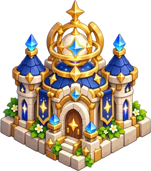
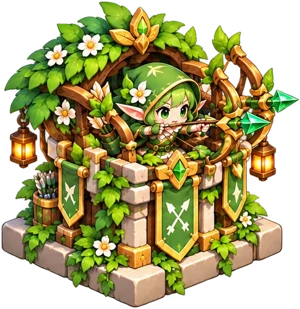

♥
20
/20
◉
320
⚑
0
/8
花語森林 · 01
林間初遇
下一波預告
⌃
自動接續
開始第 1 波
▸
Ⅱ
1×
☰
點選石台，安排你的守護小隊
×
A LITTLE MAGIC, A GREAT ADVENTURE
在星光落下的森林，築起你的魔法防線。
開始守護
✦
玩法說明
守護塔圖鑑
音效：關閉
花語森林
四場景十二關 · 六塔守護旅程


✦
✦
✧
一片森林，六種守護。
REIMAGINED · 12 STAGES
STAR WISH DEFENSE
×
請將手機橫放
讓整片魔法森林，展開在你眼前。
遊戲已暫停 · 橫放後點選繼續
✦
正在喚醒魔法森林
準備守護小隊…